To follow alongOffice runs on Windows (Microsoft Store) · Manager & Field are phone apps (App Store & Google Play). No install yet? Just read. Every step is shown on screen.
Three apps, one paper trail, and every list starts empty until your work fills it.
The suite
Three apps, one paper trail
MorForm is three apps that pass work between them: Office on the estimating desk, Manager on the PM's phone, and Field on the supervisor's. This course walks one job through all three.
MorForm Office
Windows desktop
The estimating desk. Estimates, client quotes, jobs, dispatch, and the company dashboard.
MorForm Manager
iOS & Android
The PM's site tool. Crew, job specs, dispatching work, incoming field reports, and a day-timer.
MorForm Field
iOS & Android
The supervisor's logbook. Hours, expenses with receipts, safety forms, and reports back to the PM.
The one big idea
Every list starts empty
MorForm ships with no demo data. All of the dropdown menus start off empty and populate as you use MorForm: add a client once and every client picker knows them, name a division once and it's a suggestion next time. The first setup screen already works this way: pick Canada and the province list appears; pick Alberta and for the whole suite are set. Every safety form from here on quotes the Alberta OHS Act.
Office setup, first run. Canada picked → provinces appear. Alberta picked → the suite runs on the Alberta OHS Act.
No accounts, no servers
Your work moves as files
There is no MorForm account and no MorForm server. Work travels as plain files you can see, keep, and back up:
.morjob: a dispatched job.morrep: a field report.mordata: a full handoff
Send them by email, or connect a shared Drive / Dropbox / OneDrive folder that you own and the apps pass files automatically. All of it lives in Office's Data menu:
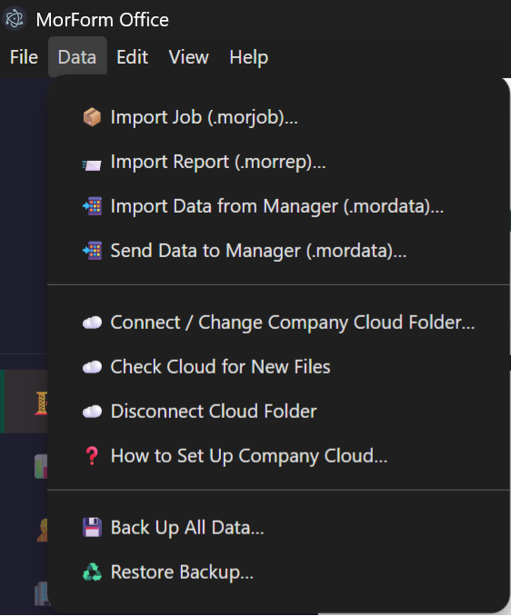
The Data menu: every file the suite exchanges.
: Import Job (.morjob) opens a job package another MorForm app sent you. Import Report (.morrep) pulls a supervisor's field report into its job. Import / Send Data to Manager (.mordata) moves estimates, jobs and contacts between Office and the PM's phone in one file.
: Connect / Change points the suite at your shared folder, Check Cloud for New Files pulls anything the crew dropped in, Disconnect turns it off, and How to Set Up Company Cloud is the built-in guide.
: Back Up All Data writes everything to a single .morbak file; Restore Backup reads one back. One file, kept wherever you keep files.
That's the theory. Next: install Office and set it up.
02
MorForm OfficePart 2 of 10~5 min
First run & adding contacts
Install Office, work through the setup wizard, then add the people you'll be picking from lists everywhere else.
Install → setup wizard
Step 1: who you are
Office installs from the Microsoft Store (search "MorForm Office") as a one-time purchase. First run shows plain-language terms, then a two-step setup wizard. Step 1 is your company identity, top to bottom:
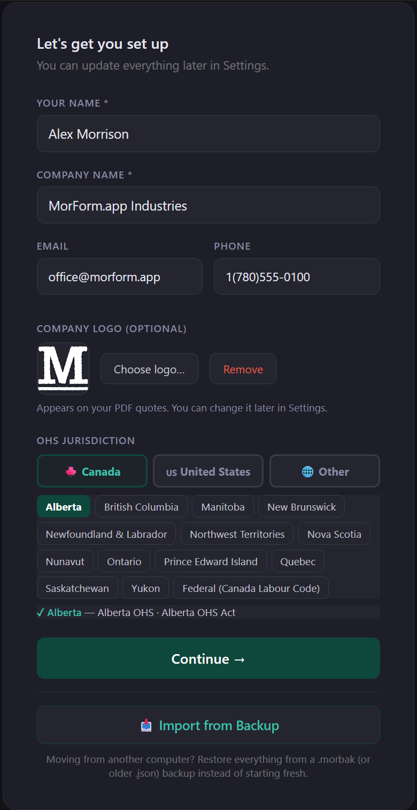
Step 1 of the setup wizard, filled with the demo identity. You'll type your own here. Everything can be changed later in Settings.
: required. You're the sender on every dispatch and quote this copy of Office produces.
: required. Prints on quotes, dispatches and PDFs.
: optional contact details for your paperwork.
: optional. The note under it says where it goes: it appears on your PDF quotes.
: country, then province. This is the Part 1 choice that sets the safety legislation for the whole suite.
: moving from another computer? Restore everything from a .morbak file instead of starting fresh.
Setup wizard
Step 2: two optional extras
Step 2 of 2 is optional; Skip for now is always available and both options live in Settings later.
Company Cloud Folder connects the shared Drive / Dropbox / OneDrive folder from Part 1, so dispatched jobs and returned reports move without email attachments. It's your own cloud storage, with no MorForm account to create. How do I set this up? opens a chooser with the two ways to run it.
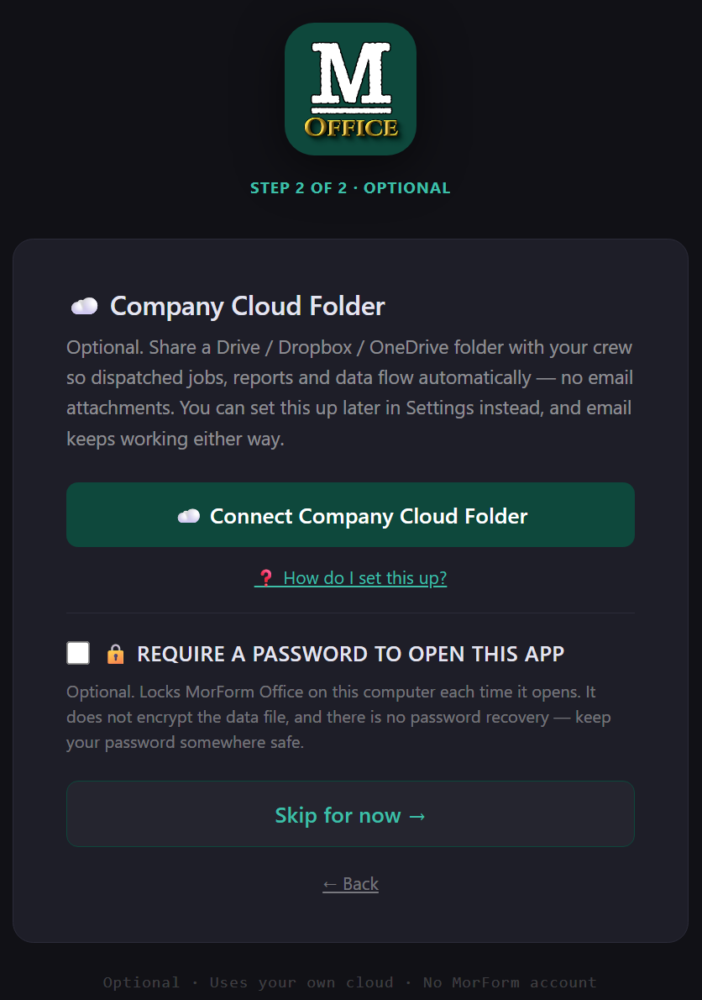
Step 2: connect the cloud folder, set a password, or skip both.
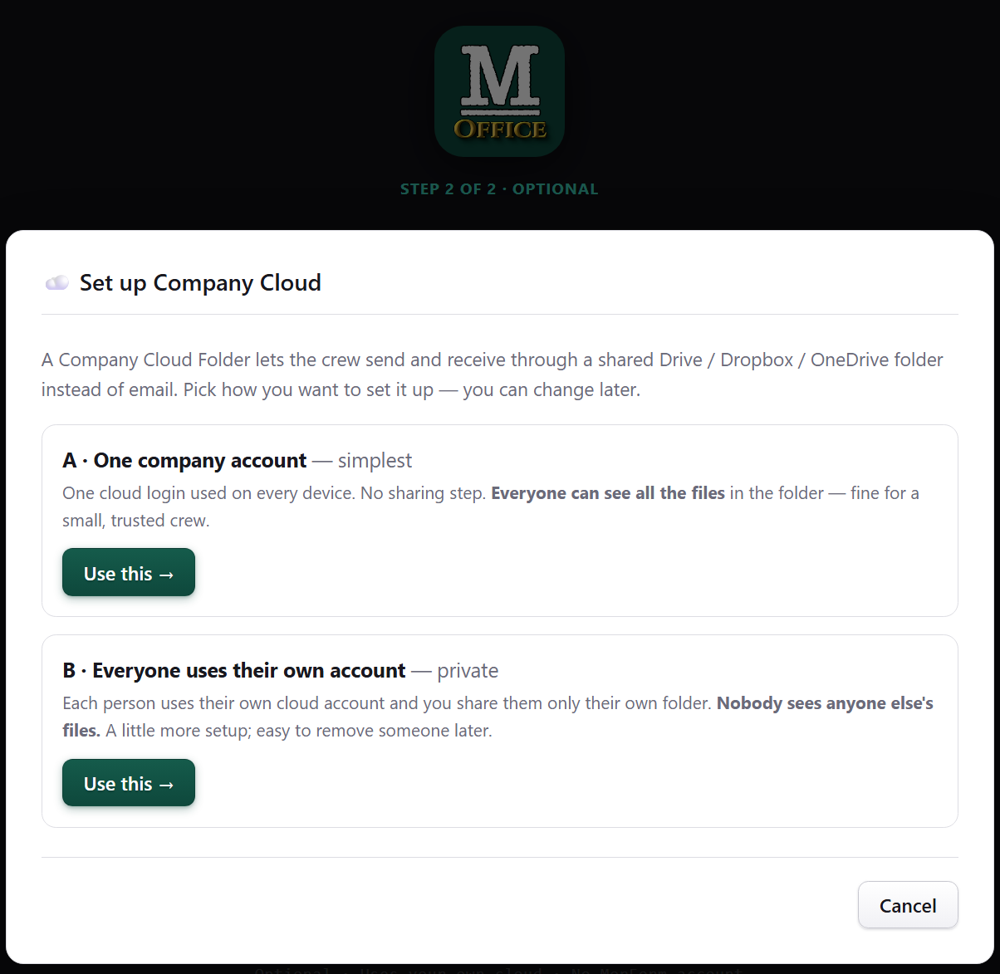
Two setups: one shared account (simplest: everyone sees all files) or one folder per person (private, a little more setup).
Require a password to open this app locks Office on this computer. Check it and you choose a password and an auto-lock timer. It does not encrypt the data file, and there is no password recovery, so keep it somewhere safe.
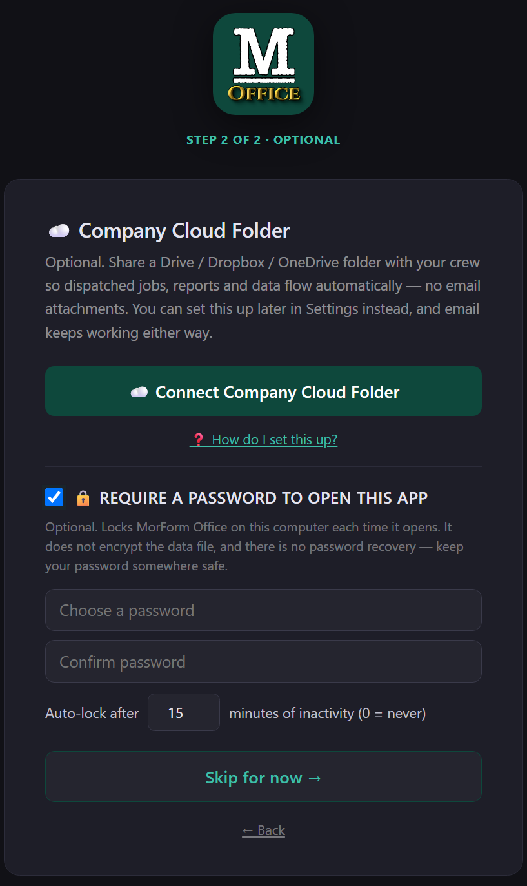
Password, confirmation, and auto-lock after N minutes of inactivity (0 = never).
The blank slate
Everything starts at zero
Setup drops you on a blank app: Jobs (0), no estimates, every crew bucket and contact category at (0), a dashboard of zeros. is the rest of the course: Crew and Contacts fill below, Estimates is Part 3, Jobs fill in as you win them (Part 4), and Send & Receive, Safety and Overview come alive once the crew starts reporting (Part 5).
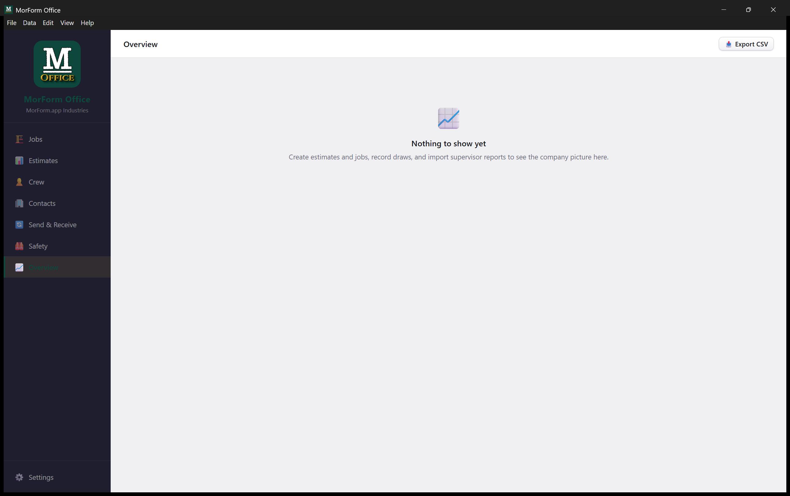
Overview on day one: "Create estimates and jobs, record draws, and import supervisor reports to see the company picture here."
Crew
Add your people
Crew is your own roster, the people you put on jobs and dispatch work to: project managers, supervisors, safety officers, subcontractors, employees. A person is a name, email and phone; subs add company and trade. : the role decides which pick-lists the person turns up in. Add Morgan as a PM and . From now on she's a one-tap pick anywhere the app asks for a PM. Supervisors can also when their first field report arrives.
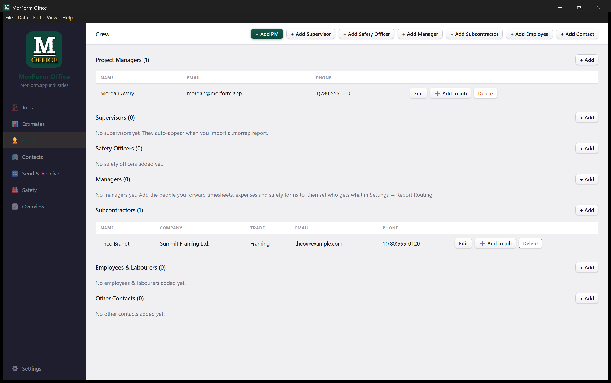
A PM and a framing sub on the roster: each row has Edit, Add to job, Delete.
Contacts & vendors
Contacts feed the pick-lists
Contacts & Vendors holds everyone you don't dispatch work to: clients, suppliers, inspectors. (Subs you hire onto jobs live in Crew; a sub you only keep on file can sit here too.) The Category you pick decides which pick-list the contact lands in later: . Hollis goes in under Owners & Clients, so , and Hollis will be waiting when an estimate asks for a client.
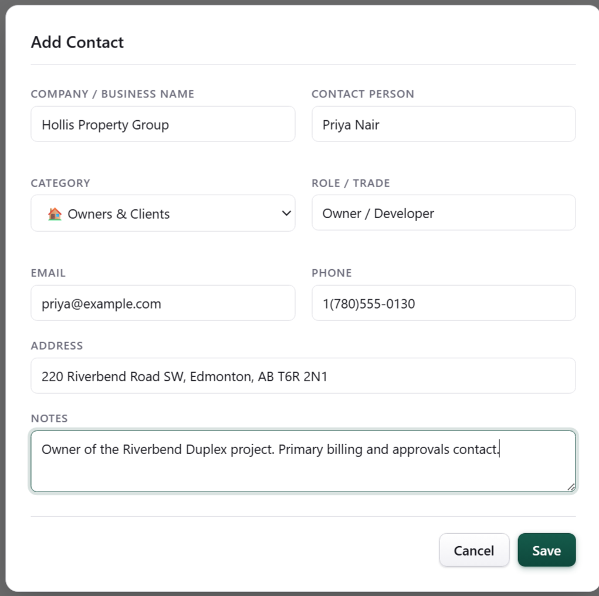
One form: company, person, category, role.
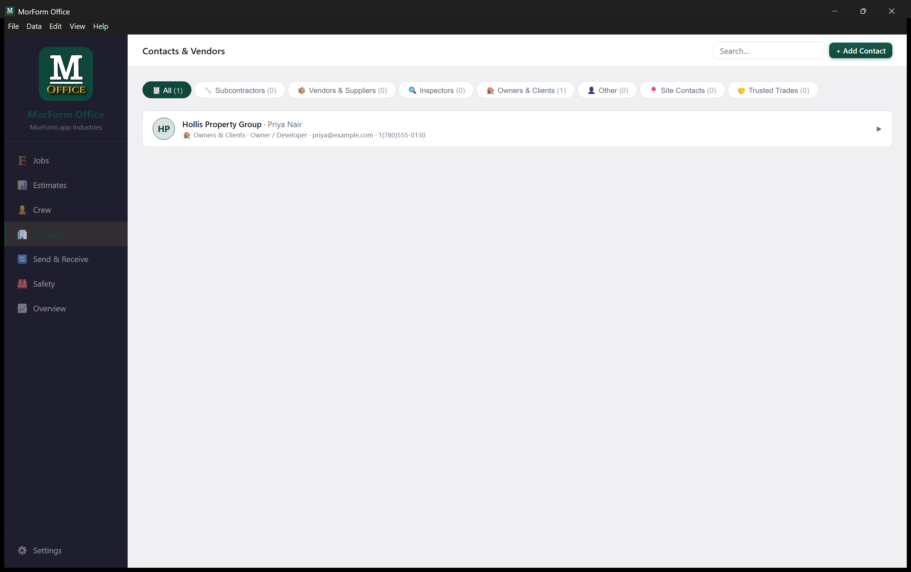
Saved: Owners & Clients (1), and a contact card ready to be picked.
That's the pattern across the whole suite: type it once, pick it from a list forever.
03
MorForm OfficePart 3 of 10~7 min
Estimating
Start blank or from a template, name divisions in plain language, and let the sheet do the math.
Two ways to start
Blank sheet or template library
New Estimate asks one question: start from Blank or from a template. ships with General Contractor (Commercial / Residential) and trade templates for Plumbing, Electrical, Structural, Interior Systems and HVAC. Templates copy the division and line-item structure, and sheets you save as templates join the same list.
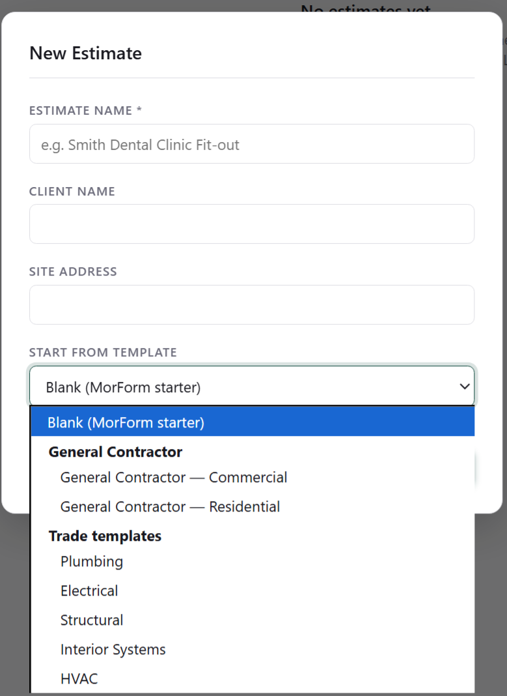
Start From Template: the built-in scaffolds plus your own saved layouts.
The authoring canvas
Divisions and line items, typed in place
A blank estimate is a live sheet. runs across the top: Draft → Approved → Quoted → Won. Under it are client and markup fields, , and with ghost prompts. Name divisions in your own words, like "Framing" or "Sitework & Foundation".
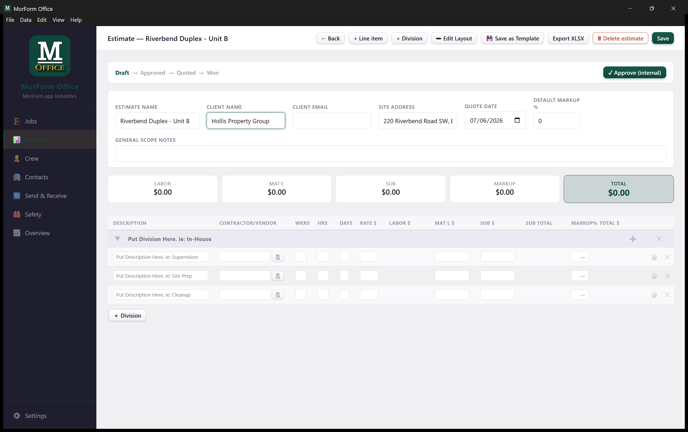
The blank sheet: pipeline, header fields, $0 cards, and a starter division waiting for a real name.
The math
Labour lines calculate, totals roll up
Labour rows multiply Workers × Hrs × Days × Rate. : 1 worker × 8 hrs × 9 days at $65 works out to $4,680. Material and sub rows take dollar amounts. Default Markup is set once in the header; every row inherits it (the ↑ in its Markup% box) and any row can be typed over. recalculates on every keystroke. The finished Riverbend sheet: four divisions, nine line items, $103,185.60. Note .
The finished sheet: labour, material, sub and markup cards roll into the total.
Pick-lists again
Vendors come from your Contacts
Every line has a Contractor/Vendor field with a "Choose from contacts" picker, and it lists only what you've saved. Summit Framing went in back in Part 2, so . Typed once, picked from now on.
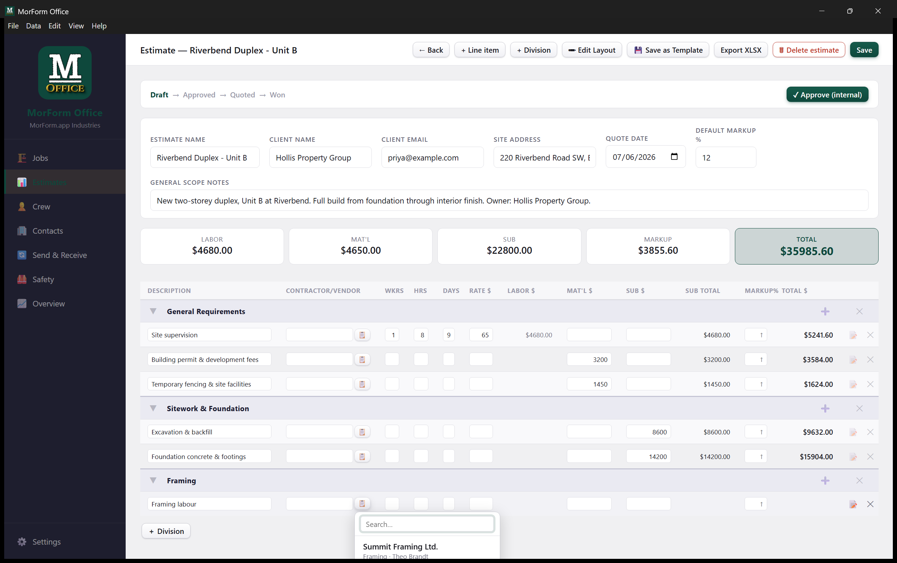
The vendor picker, fed by your own contacts.
Make it yours
Reshape the sheet, save your own template
Edit Layout lists every column with a plain note on what it does. Rename them, reorder them, hide the ones you don't use, or : Equipment $, Contingency %, a Room note. When the sheet fits how you work, and it joins the start-from list. Start from one later and : structure copies, prices never do.
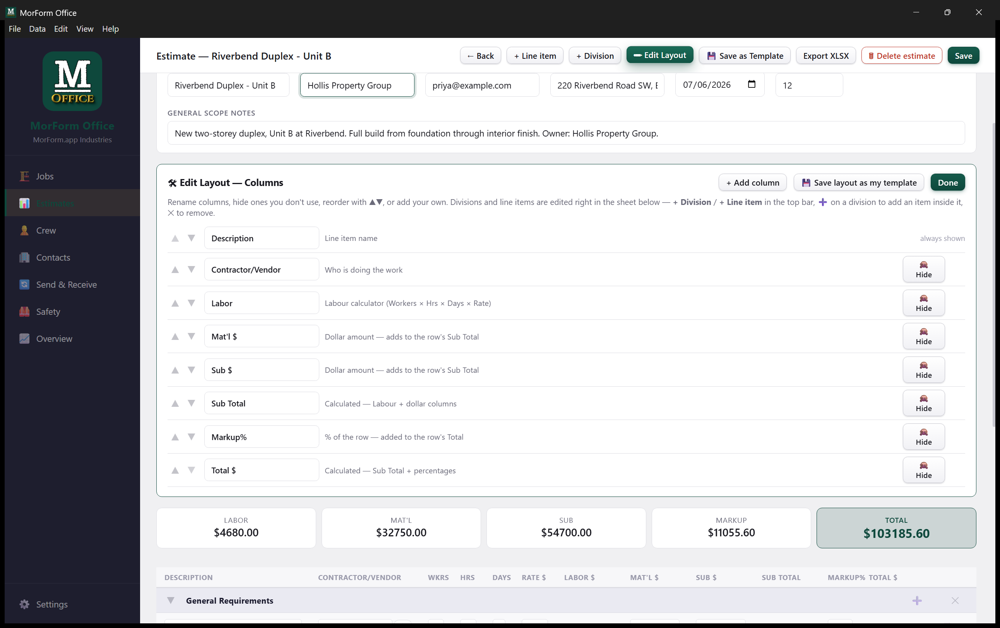
Edit Layout: reconfigure the sheet per trade.
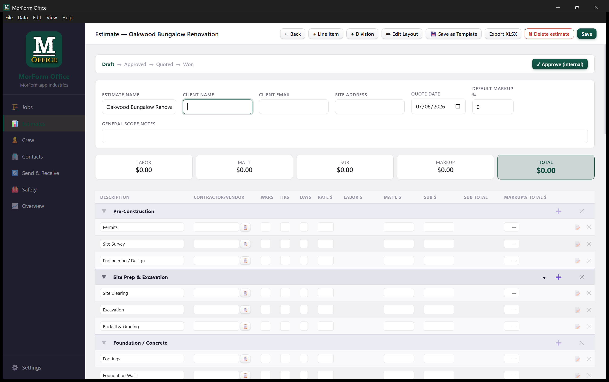
Started from General Contractor (Residential): the structure arrives, the prices are yours to fill.
The menu bar
The File menu
Two menus do the heavy lifting. You saw Data in Part 1; File is the spreadsheet side:
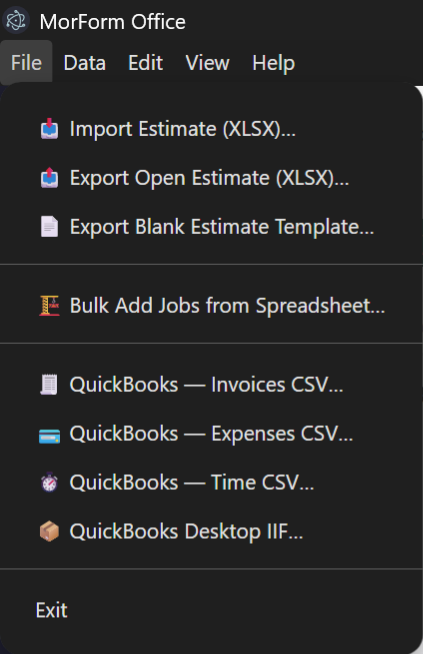
The File menu: Excel in and out, QuickBooks out.
: Import Estimate (XLSX) brings a filled template in, Export Open Estimate (XLSX) sends the sheet on screen out, and Export Blank Estimate Template gives you the empty template MorForm can always re-read.
: paste a list of jobs in one go instead of creating them one by one.
: Invoices, Expenses and Time as CSV, or a Desktop IIF file. Exports your bookkeeper can import directly.
Office points this out itself the first time you land in Estimates:
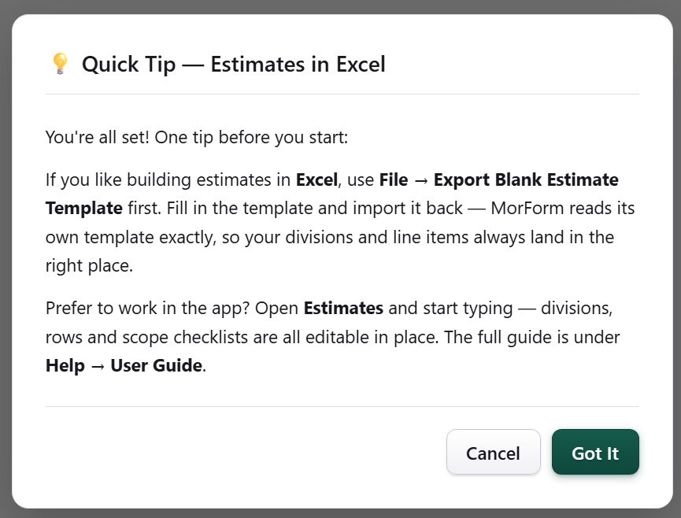
Prefer Excel? Export the blank template, fill it in, import it back. Divisions and line items land in the right place.
04
MorForm OfficePart 4 of 10~4 min
Estimate to won job
Approve it, quote it, win it. The job creates itself, and your costs never leave the building.
Step 1
Approve it internally
Approve (internal) is your own sign-off that the numbers are ready. Nothing goes to the client. , and : Proposal & Quote, Mark Quoted, or Back to Draft if you change your mind. Mark Quoted skips the PDF, for when the client already has your price some other way.
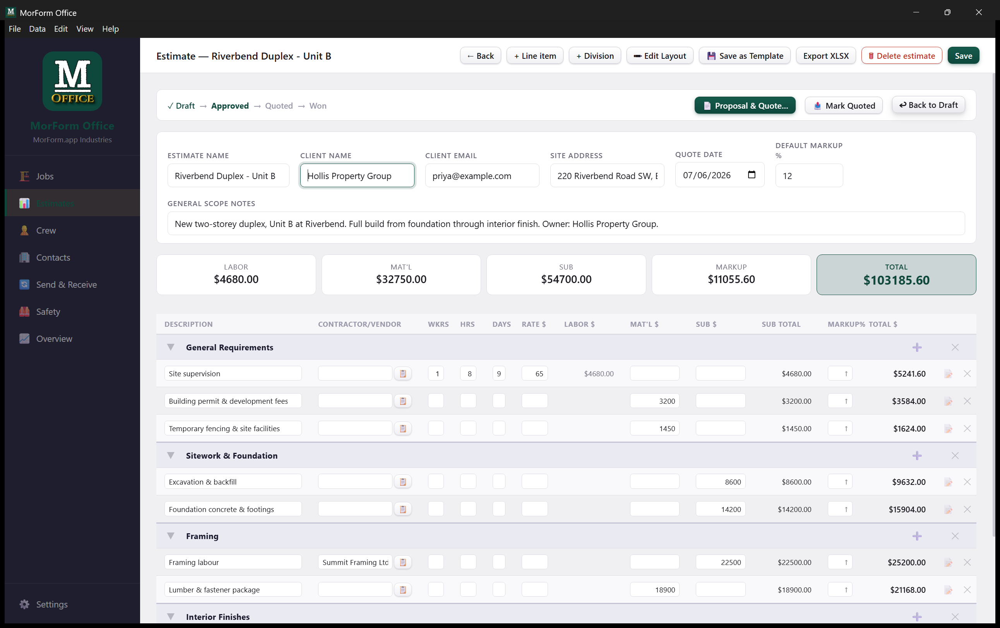
Approved. Still internal.
Step 2
Build a clean quote, keep costs private
Proposal & Quote builds the client PDF. You choose how much price detail the client sees: one grand total, section subtotals (the usual pick), or every line item. The quote number is assigned automatically. Export asks where to save the PDF; sending it is up to you, from your own email. The dialog states the rule: internal costs (labour math, markup, vendors) are never included.
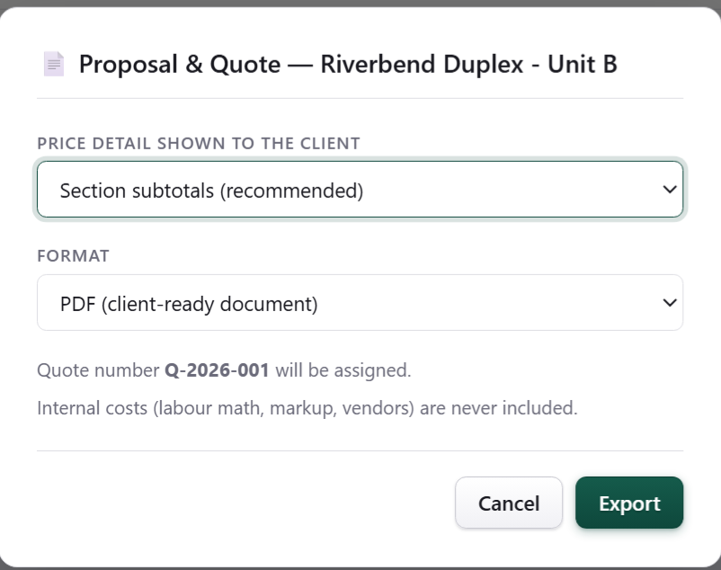
The client gets a clean quote; the cost build stays in the estimate.
Quote numbers are yours to run: Settings → PDF & Quotes.Auto assigns Q-YYYY-NNN, with an optional restart at 001 each new year. Manual asks you to type a number at each export. Override next number re-points the counter once; numbering continues from there.
This is the exact document it produces, from the data built in this course:
Client Quote Q-2026-001, as Hollis Property Group receives it. Open the PDF ↗
Step 3
Won → the job creates itself
Generating the quote moves the estimate to Quoted. When the client says yes, hit Won → Create Job: the job dialog opens pre-filled from the estimate: name, address, scope notes. You just add start and end dates. .
Estimate lifecycle
Draft→Approved→Quoted→Won
✓ Job created: Riverbend Duplex - Unit B · budget $103,185.60 carried over
One click per stage. A no is one click too: Mark Lost, beside Won. The estimate keeps its history either way.
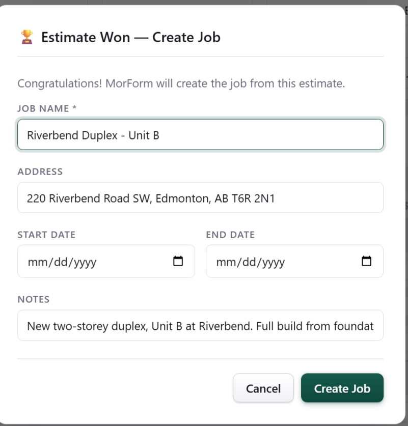
Won → Create Job: pre-filled from the estimate, you add the dates.
05
MorForm OfficePart 5 of 10~5 min
Running the job
The estimate becomes a live budget, the job goes to the field as a file, and the dashboard keeps score.
The job dashboard
Your estimate became a budget
The new job opens with the estimate already working: and (the supervision line: 1 worker × 8 hrs × 9 days). Hours and expenses sit at zero until field reports arrive.
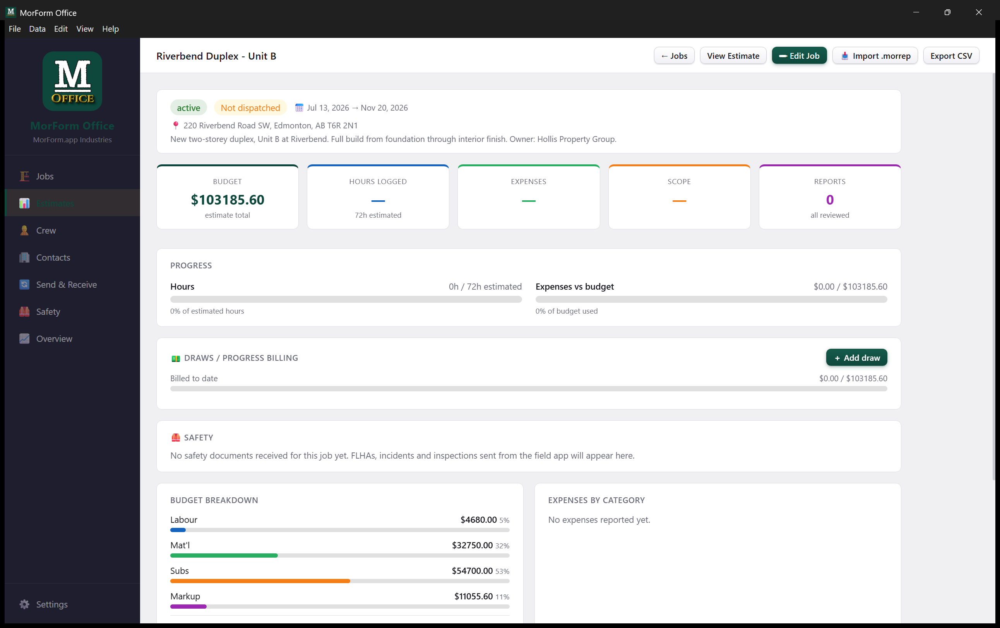
Day one: budget from the estimate, 0h logged, $0 spent, and a Safety panel waiting for field forms.
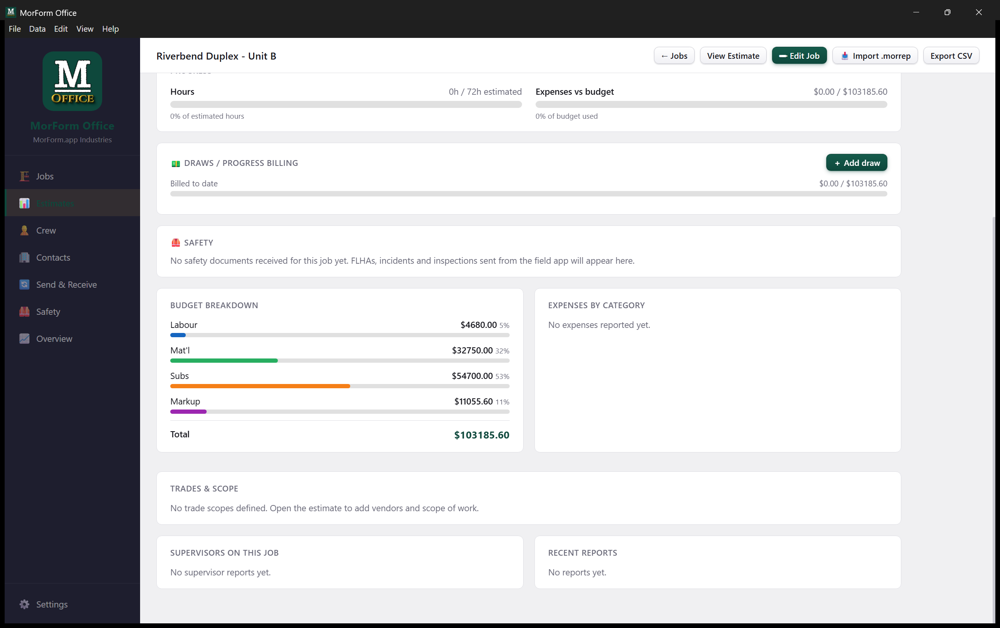
The estimate's cost split carries into live job costing; actuals fill in as reports arrive.
Dispatch
Hand the job to the field as a file
Send & Receive handles every file the suite exchanges. Send Job to Supervisor saves a .morjob and opens an email to the supervisor. Desktop email can't attach files on its own, so MorForm highlights the saved file in your file explorer: attach it and hit send. A Company Cloud Folder skips that step, dispatched jobs deliver automatically. . The Jobs list only reads DISPATCHED after the email actually goes out.
Dispatching Riverbend Duplex - Unit B
Save .morjob→Email opens→You hit send
✓ Jobs list now reads DISPATCHED, not before
Back on the Jobs list, the Dispatched column shows no date until the email is sent.
In the dialog: pick the , attach , and keep the package so email can deliver it.
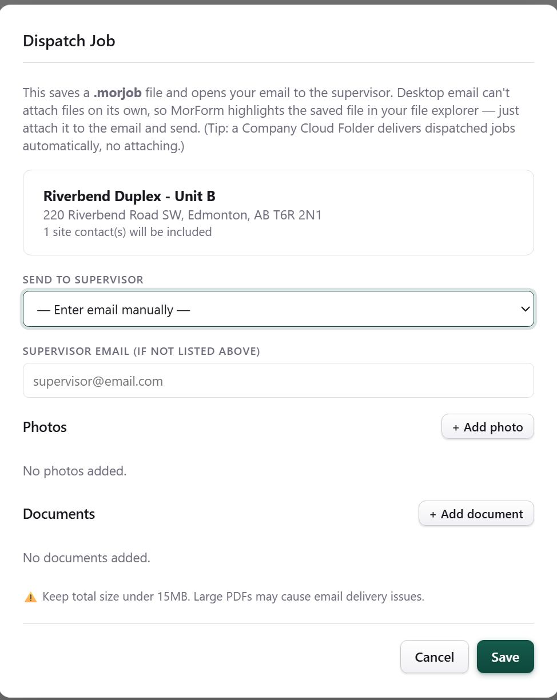
A dispatch is the whole job package (info, contacts, permits, photos) in one .morjob file.
The scoreboard
Overview fills from the pipeline
Overview tracks the company, not one job. After one won job it reads and , while until real time and expenses come back from the field. The dashboard never invents numbers.
Overview after one won job: zeros stay zeros until the field reports in.
06
MorForm ManagerPart 6 of 10~6 min
Setup, crew & the spec wizard
The PM's phone: onboard it in minutes, add your supervisors, and scope a job with lists that build themselves.
Onboarding
Same idea, smaller screen
Manager onboards like Office: plain terms, then your company (name, logo, country → province), your profile (the identity on every job you dispatch), an accent colour, and report-routing addresses for payroll, safety and HR. The addresses are optional.
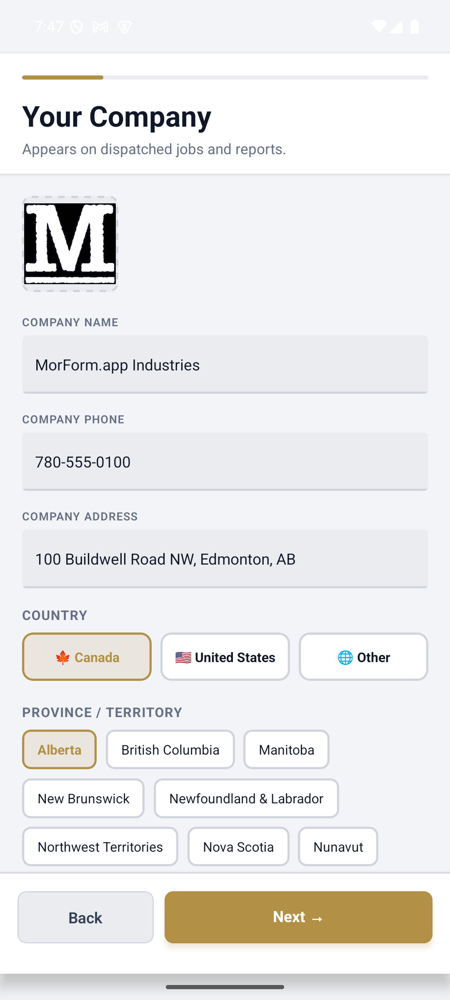
Company step: same country → province choice as Office.
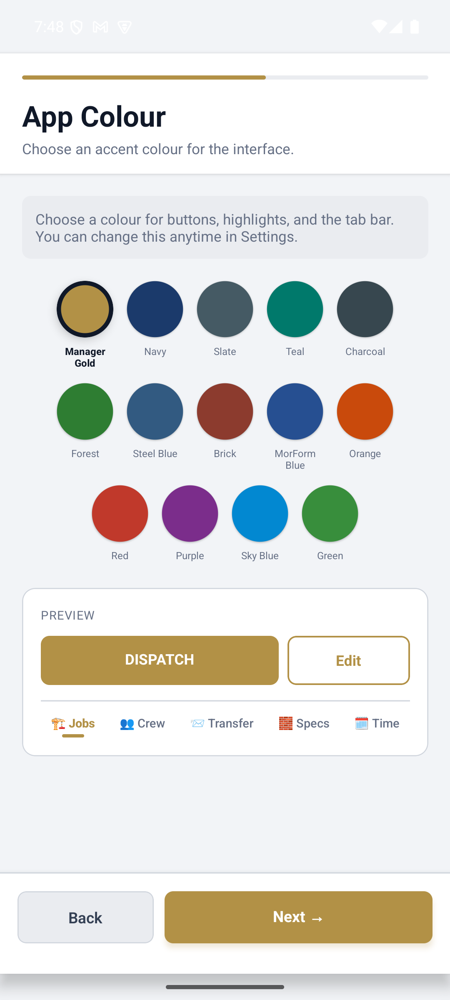
Pick a colour, and meet the five tabs: Jobs · Crew · Transfer · Specs · Time.
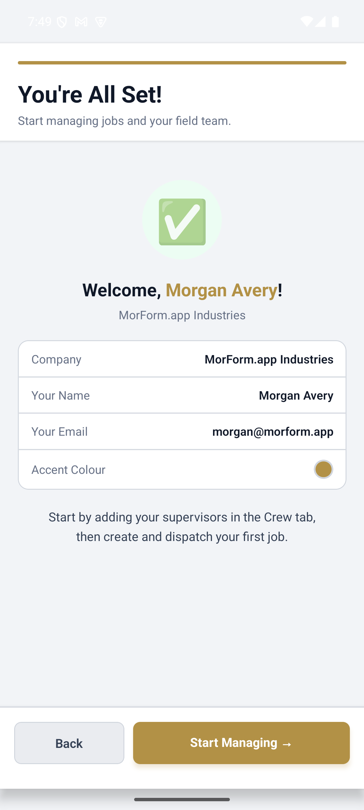
Configured, and still empty. Everything from here is built by use.
Crew
Supervisors in three fields
Crew is where dispatching starts: every supervisor here is a recipient later. Name, email, phone. . Supervisors also add themselves when their first .morrep report arrives (Part 8).
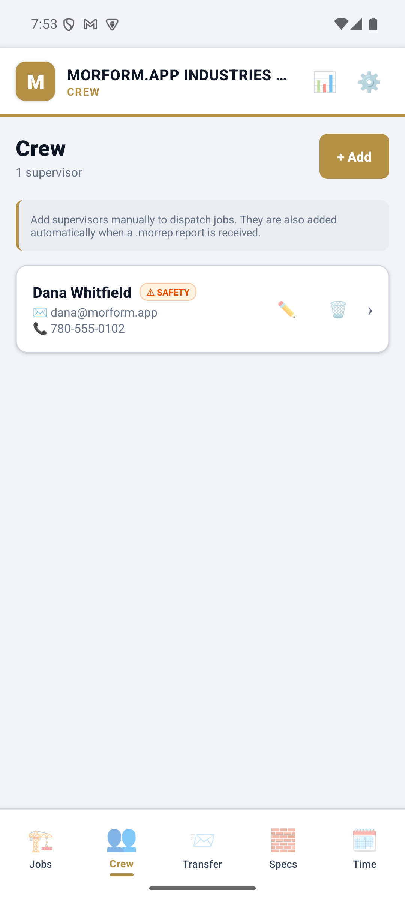
1 supervisor. This list feeds every supervisor picker in the app.
The generated-lists moment
"0 saved subtypes": the wizard proves the idea
The 4-step spec wizard scopes a job: job info → type → subtype → trades & scope. On a fresh install, step 2 shows Residential, Commercial and Industrial each reading . Type "Basement Development" once and it's saved. Next job it's a one-tap choice, trades included. .
Step 2 → Step 3 · Residential
Residential · 0 saved subtypes
"Basement Development"✓ Saved
Next spec, "Basement Development" is a one-tap choice, and it remembers its trades.
Every subtype in this app was created by you.
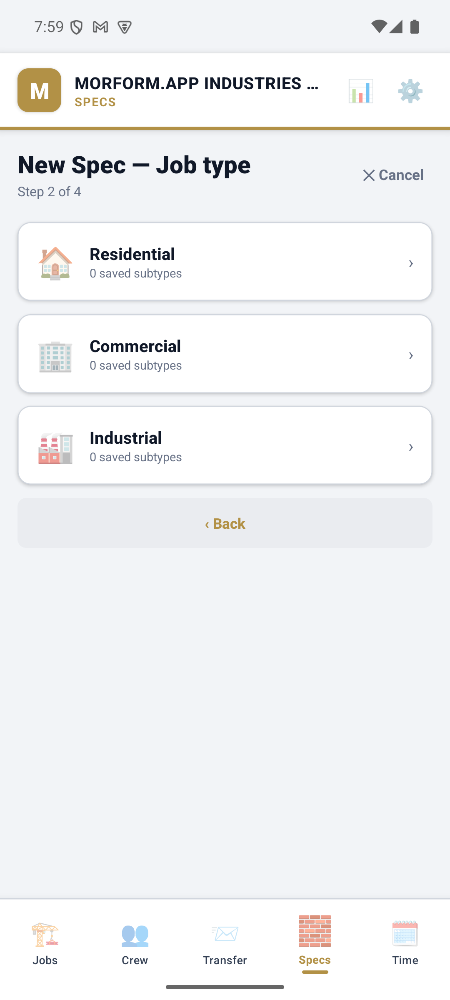
Fresh install: three job types, zero subtypes.
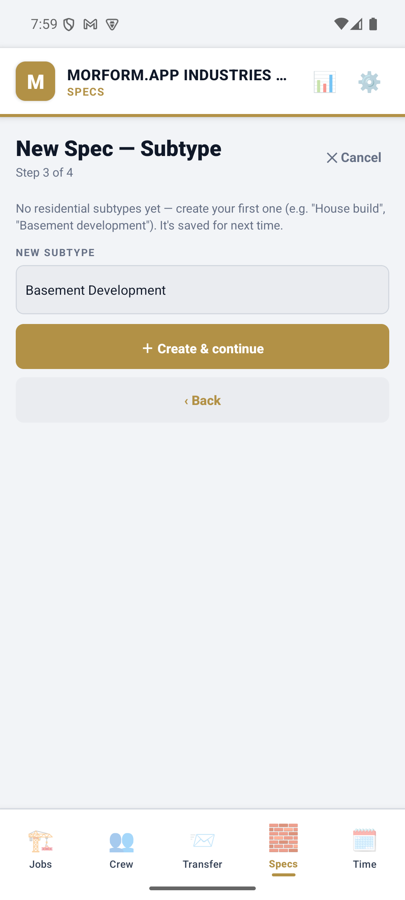
"It's saved for next time." The screen says so itself.
Trades & scope
Trades, vendors and scope, remembered together
Step 4 builds the trade list for this subtype: add Framing, Electrical, Drywall, then attach a vendor with and scope with . All of it is saved to "Basement Development". Next time, the whole structure is one tap.
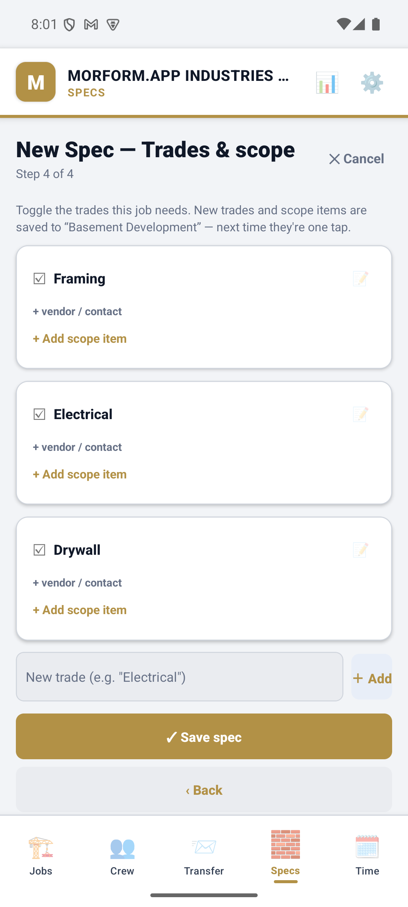
Three trades, each with "+ vendor / contact" and "+ Add scope item."
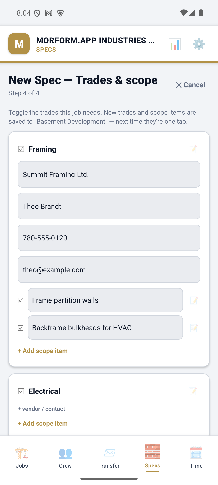
Framing specced: vendor, contact, and two scope items that follow the job.
One flow, two artifacts
Saving the spec created the job
Save, and the job appears in the Jobs tab with the spec attached. From the spec card, Send to Office shares a .mordata file; Office turns it into an estimate with your trades as the division headers (that's the estimator from Part 3).
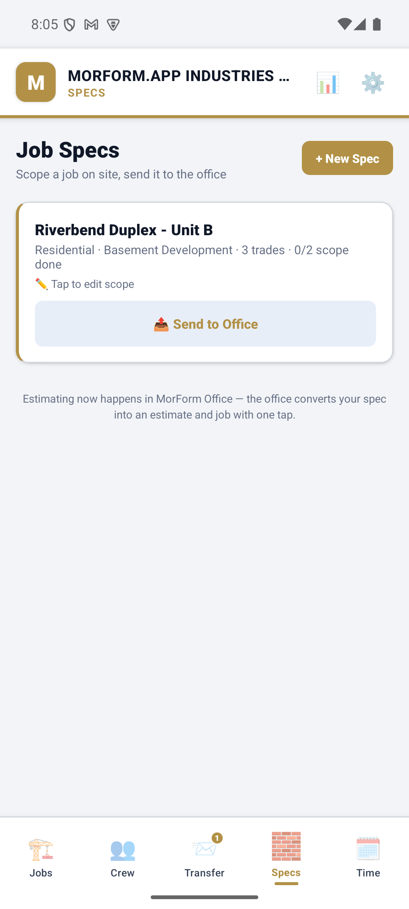
The saved spec: 3 trades, scope progress, Send to Office.
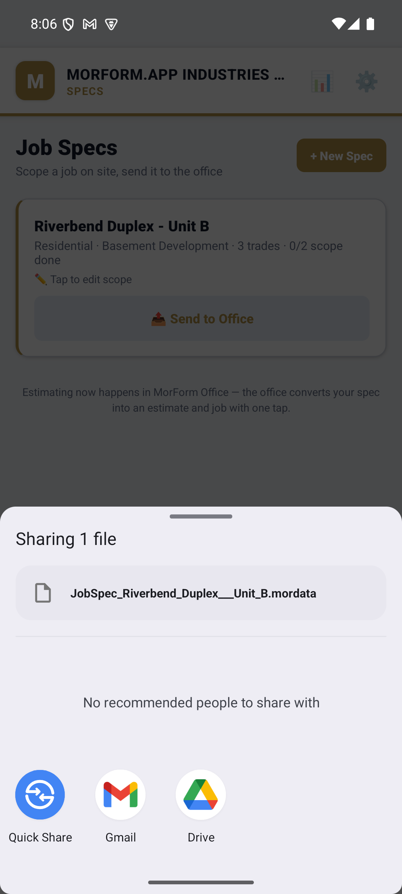
No server. The spec leaves as a file, via email, Drive, or any share target.
07
MorForm ManagerPart 7 of 10~6 min
Jobs, dispatch & your day
Run the pipeline from a job card, hand work to a supervisor as a file, and log your own hours as you go.
The pipeline
Status is one tap on the card
The Jobs tab is the pipeline: filter chips with , status on every card. Tap the and it cycles. The counts update the moment it flips. No edit form for the everyday move. .
Tap the status chip
QUOTING→APPROVED
✓ Filter counts: Quoting 0 · Approved 1, updated live
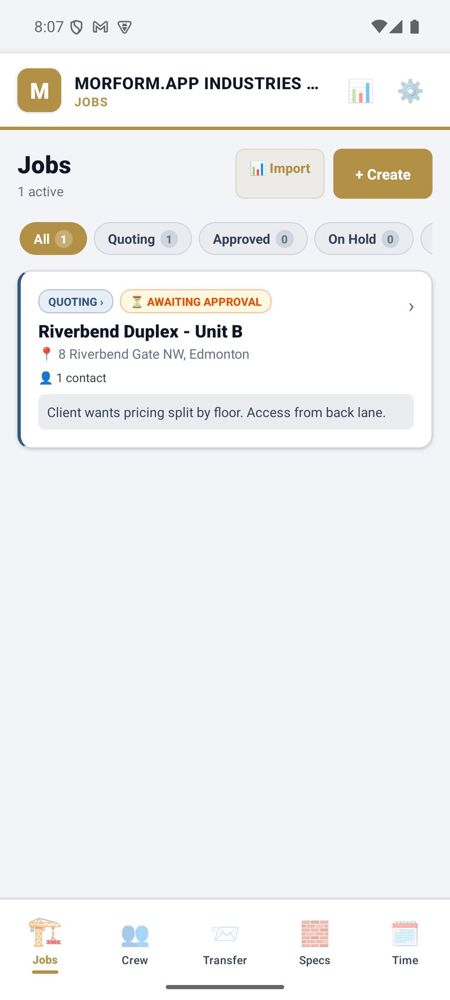
The job the spec wizard created: badges, address, contact count, office note.
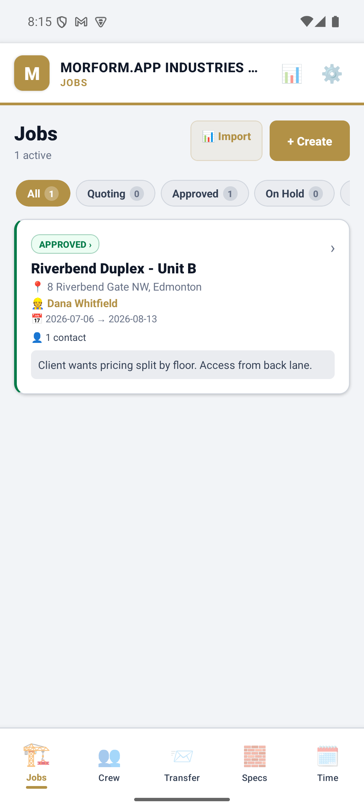
One tap later: APPROVED, counts moved.
Job detail
Five tabs, everything attached
Open the job: Overview · People · Permits · Files · Notes. On Overview, and sit at "None yet" until the other apps report back. Vendors from the spec wizard surface under Trades on Site automatically, and permits (type, number, authority, dates) live on the job and travel with the dispatch.
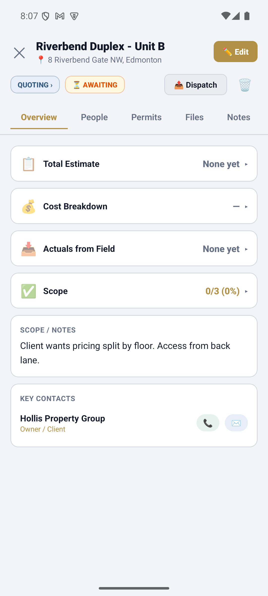
Overview: estimate and actuals stay empty until Office and Field send data back.
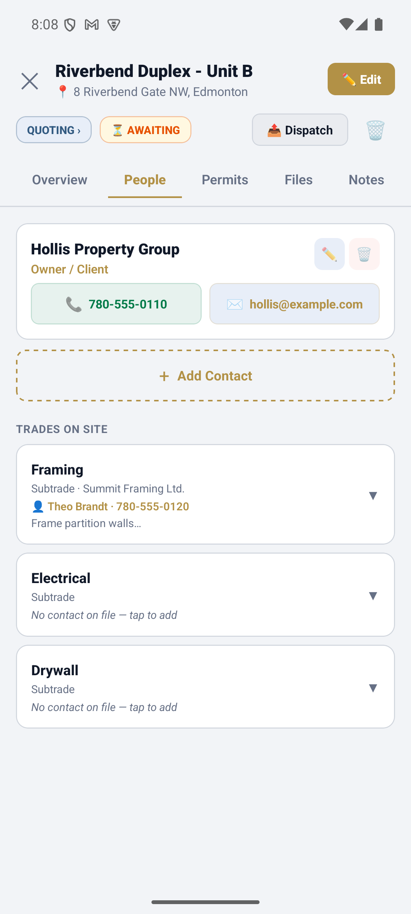
People: the client from step 1, and spec vendors surfaced automatically.
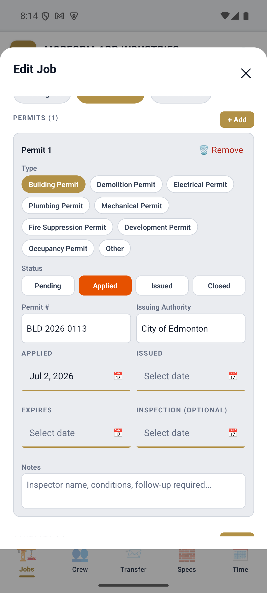
Permit tracking lives on the job and follows the dispatch.
Dispatch
Recipients come from your crew
Dispatch opens a recipient list that is exactly : pick Dana, keep the client contact checked, and shares a .morjob file by email, share sheet or the cloud folder. Afterwards the outbox shows "✓ Dispatched" and you can tap to re-send; every send is repeatable.
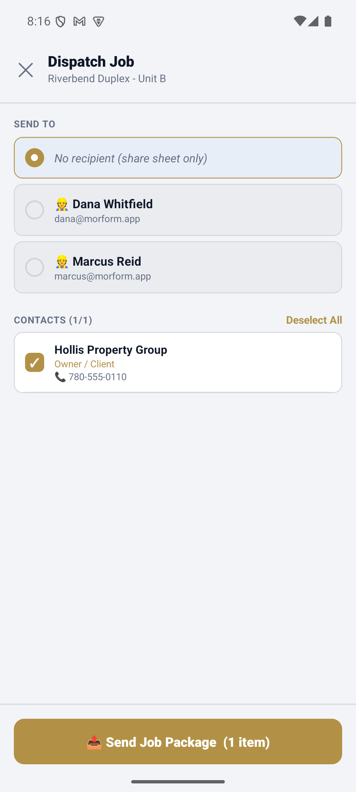
Send to: your supervisors, from Crew. Contacts travel with the package.
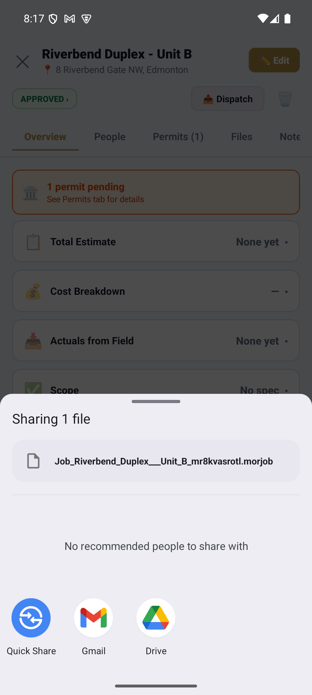
The dispatch is a file: Job_Riverbend_Duplex___Unit_B….morjob.
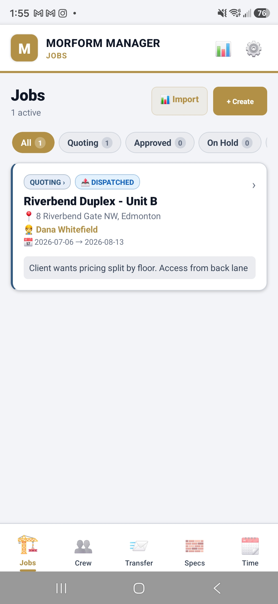
Back on Jobs, the card now carries a DISPATCHED badge. Tap the job to re-send anytime.
Your own time
Log hours in quarter-hour taps
The Time tab is the PM's own journal, separate from supervisor timesheets. Add an entry, pick the job (the dropdown holds exactly the jobs that exist) and step the hours in the increment set at onboarding. .
Add Time Entry → Hours
8h
Riverbend Duplex - Unit BOvertime ☐Stat Holiday ☐
Steps follow your timesheet increment: 0.25h here, set during onboarding in Part 6.
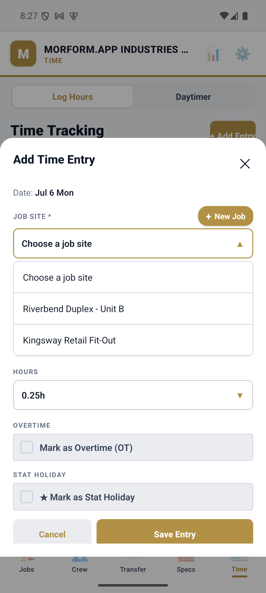
Two jobs exist, two options appear.
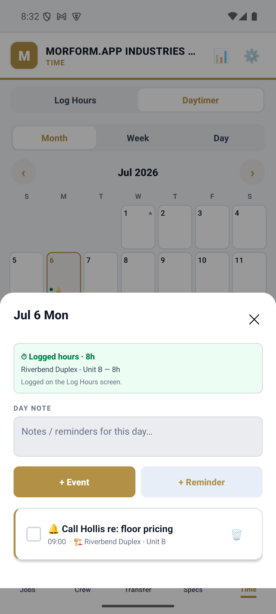
The daytimer cross-references logged hours; reminders can attach to a job and a crew member.
Waiting on the field
The reports dashboard is ready
Reports aggregates supervisor submissions by date range, job or supervisor. It reads "0 submissions in range" until .morrep files land in the Transfer inbox. That's Part 8.
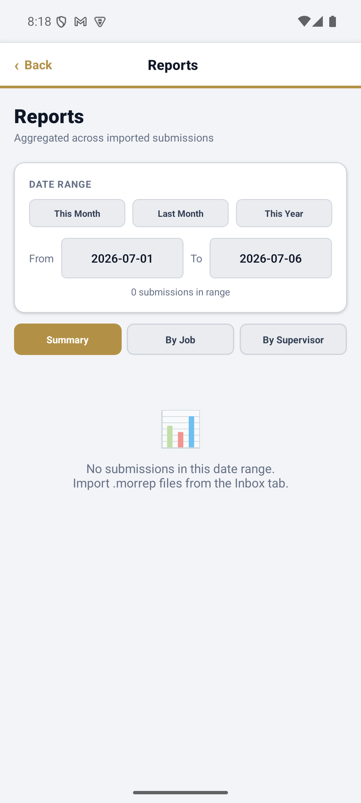
The dashboard only counts what actually arrived.
08
MorForm FieldPart 8 of 10~5 min
Job & costs
The supervisor's phone: import the dispatched job, then log the hours and receipts that become the report.
Onboarding
Set up once, work all season
Field onboarding is the worker's side of setup, done once. It asks for the company and the worker's name (the name that signs every form), a pay schedule so the timesheet groups pay periods correctly, work hours and a timesheet increment (the steps the Hours dropdown counts in), and a jurisdiction, which sets the overtime rules and the OHS act quoted on every safety form.
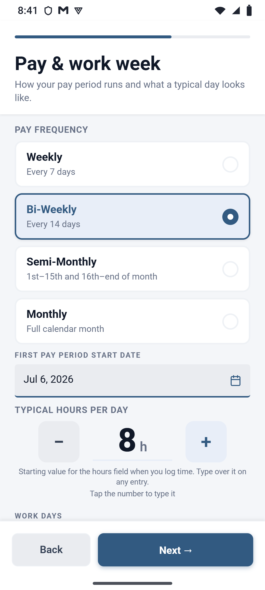
Bi-Weekly: the Reports tab groups pay periods to match.Alberta → "OT: Daily >8h · Weekly >44h." One tap drives the rules app-wide."Start by adding your job sites, then log your first time entry."
The dispatch lands
Import the job. Nothing re-typed
The .morjob the PM sent opens straight into the app: PM contact, site note, the building permit, the client contact. The whole package lands intact. appear on the card on their own; they're compliance prompts the app raises, not decoration.
The imported job, fully loaded: badges included.
The receipt: "Included: 1 permit, 1 contact." Exactly what the PM packed.The permit the PM tracked, mirrored on site. Hours and expenses fill as you log.
Time
Hours in the increment you chose
Add Entry → pick the job (the dropdown holds only the jobs on this phone) → set the hours in your increment → flag overtime or a stat holiday → save. A green dot marks the day; the week adds itself up.
One job on the phone, one option in the list.Jul 6 Mon · 8h logged. This row is headed for the timesheet.
Expenses
Receipts photographed at the counter
An expense takes a job, a payment method (company card, vendor account, or personal to reimburse later), a vendor, and a receipt photo from camera or library. Blurry receipt? swaps it without redoing the form. Watch : $147.75 at Site Supply Co., receipt attached. Half-finished forms get a discard guard, so a phone call doesn't cost you the entry.
Expense tab total
$147.75
Site Supply Co. · Company Card1 receipt attached
Every expense carries its receipt: payroll and the PM see the photo, not a mystery number.
$147.75, receipt attached, Replace Photo if it's blurry.The discard guard: nothing half-entered is thrown away silently.
09
MorForm FieldPart 9 of 10~6 min
Safety done right
FLHA, site inspection, emergency response plan: guided, OHS-compliant, and signed on the spot.
The toolkit
One tab, the whole safety routine
The Safety tab holds it all: FLHA, Site Hazard Inspection, Incident Report, Emergency Response Plan, plus blank printable forms and paper-form upload. Each one is tagged with the OHS rule it satisfies. If something does go wrong, the Incident Report is right there in the same list: injury, near miss, or dangerous occurrence. And does the nagging: "FLHA Not Yet Done Today."
The daily-FLHA banner enforces the routine; every form lists its OHS basis.
FLHA
Hazard assessment, step by step
The FLHA is five guided stages. Job info pulls from your job list, hazards are tap-to-select chips, task steps build a reusable library, PPE is a checklist, and the crew signs on the glass. The attestation quotes your jurisdiction: "…per Alberta OHS Act… all workers understand their right to refuse unsafe work." .
FLHA: five stages
1 Job Info→2 Site Hazards→3 Task Steps→4 PPE→Review & Sign
✓ Signed: Dana Whitfield, Employee · Submit FLHA
Step 1: the job comes from your list, the scope in your words.Step 4, PPE as tap-chips: hard hat, glasses, boots, fall protection…
The core lesson
Every hazard forces a real control
Select a hazard and a Control Methods card opens for it, ranked by the OHS Hierarchy of Controls, 1 Eliminate down to 5 PPE. Slippery Surfaces takes plus . Ticking a box isn't enough.
Step 2: hazards are tap-chips; every one you select demands a control.
Slippery Surfaces → 3. Engineering, with the control written out.
The form says it in so many words: "PPE alone is not sufficient." Controls first, equipment last.
Inspection
The site inspection scores itself
The 12-page Site Hazard Inspection rates every item Pass / Fail / N/A / Action Required. Any non-Pass opens a mandatory "describe the issue" field, a live tally rides in the header, and Action-Required items roll into a punch list with your note attached. .
Page 12: Review & Score
98% compliant
57 scored56 pass0 fail1 action required
One item flagged Action Req. The describe-issue field is not optional.Auto-scored: 98% compliant, one punch-list item, signed by the inspector.
ERP
The plan you post before work begins
The Emergency Response Plan (OHS Code Part 7) pre-fills 911, Alberta OHS and Poison Control, then asks for what only you know: nearest hospital and route, muster point, first-aid locations, emergency contacts. Review it with the crew, sign, post it.
Hospital, route, muster point: the answers that matter at the worst moment."Reviewed with all crew members," then the supervisor signs.
Proof
The PDFs are the point
Every completed form becomes a branded, compliant PDF you can hand to the PM, the safety officer, or the auditor. These two came from the forms above:
✓ Hours, expenses and safety docs land on the job. Nothing typed twice, nothing on anyone's server.
↺The updated costs and rates feed your next estimate. Same loop, next job.
Manager rides the same loop on mobile: specs out, dispatches out, reports in.
The report comes home
From pay period to paper trail
On the field phone, the Report tab rolls logged time into a pay-period timesheet: on Riverbend for Dana, . It goes out as a branded PDF + CSV, or as a .morrep file.
The timesheet builds itself: Generate PDF, Export CSV, or Email to Manager.Reports leave as files, like everything else in the suite.
Back at the desk, Send & Receive : the supervisor appears in Crew automatically, hours and expenses hit the job's actuals, and the dashboards get their numbers. When accounting asks, is right there too.
Office's Send & Receive: reports in, dispatches out, and QuickBooks CSV/IIF export when accounting asks.
Take the samples
What the suite actually produces
All four documents were generated from the data built in this course. Same job, same people, start to finish:
First job on your own install: Settings → Company in each app: your name, your logo, your jurisdiction. Every quote, dispatch and safety PDF carries them from then on.
Field · Manager · OfficeAppendix · reference~7 min
Settings across the suite
Every default this course used and where to change it. One pass through Settings in each app: Field, Manager, then Office.
The map
One Settings screen per app
All three apps keep Settings as one screen of cards: open a card, change what you need, then Save All Changes at the bottom (Office saves as you go). A few cards repeat across the suite: Appearance, Company, Data & Backup, Help & User Guide. The rest match each app's job. Field carries the crew cards (Employee, Work & Pay, Jurisdiction & OHS Authority, Stat Holidays). Manager carries the PM cards (My Profile, Report Routing, Reminders). Office carries the desk cards (PDF & Quotes, Dashboard & Costing, Accounting, Estimate Templates, Security).
Field: the crew phone's list.Manager: the PM's list.
Office: the desk's list. The rest of this page walks the cards that matter most.
Field · Work & pay
The rules behind every timesheet
Dana's Part 8 timesheet did its math from this card. Pay schedule and the first period start date decide which pay period a shift lands in. Typical start and end times prefill new entries. rounds them: 1 hour keeps entry fast, 15 minutes if payroll wants it exact. The sets when hours turn into OT (Daily past a per-day threshold, Weekly past the week's cap, Both, or Custom), and the matches your province or state. From there the app flags OT on its own.
Set once per crew phone. Every timesheet after that follows these rules.
Field · Your data
Backups and the cloud folder, crew side
Three ways to back up: the cloud folder, email, or a file saved on the phone. Restore from Backup brings any of them back. is the manual door for dispatched jobs, and tapping a .morjob attachment in email does the same thing. With the Company Cloud Folder connected, imports dispatched jobs on its own; Check Cloud pulls on demand.
The crew phone moves files in and out without a cable.
Manager · Report routing
Reports reach the right inbox by default
When a PM forwards crew reports from Manager, these addresses are already filled in: for timesheets and expenses, for FLHAs and incident reports, HR / Administration for general crew records. Default mail app picks which email app the phone opens.
Fill these once and forwarding a report becomes two taps.
Manager · Reminders
How hard a task nags
Task reminders behave by priority. Push is a normal notification. Alarm is the loud one: on Android it plays at alarm volume, on iPhone it breaks through Focus but not the mute switch. Badge is a count of due tasks on the Notes tab and the app icon. The sets the default mix; a task with a reminder always gets at least a push.
High gets everything. Low just counts on the badge.
Manager · Your data
Backups, handoff and bulk import
Backups work like Field's. Two extras are PM-only. sends your full data set to MorForm Office, or to another project manager taking over (your own email is selected by default; add other PMs from your PM list). downloads a blank template to fill out in a spreadsheet and bulk-import into Jobs.
Same backups as Field, plus the handoff and the CSV template.
Office · Your brand
Company: name, logo, jurisdiction
Every screen in this course says MorForm.app Industries because that's what setup typed. This panel changes the company name, address and , and re-brands every quote, dispatch and PDF from that moment on. Below it, the sets the authority and legislation named on every safety PDF. Pick your province once; the Part 9 forms follow it.
One screen, suite-wide effect: brand on every PDF, jurisdiction on every safety form.
Office · Paperwork
PDF & Quotes: numbering, terms, signature
assigns the next quote number each time you export a PDF; Manual asks every time. Override the next number if you switch mid-year. Quote valid days and the terms text print on every quote (Part 4 used these defaults). takes a photo of your signature on white paper, strips the background and signs your PDFs. No image means your typed name is used instead.
The number, expiry and terms on Part 4's quote PDF all came from here.
Office · Money
Costing rate and the QuickBooks handoff
Dashboard & Costing holds one number that matters: the ($/h, wages plus burden) that turns reported field hours into labour cost on Overview. Leave overtime blank for 1.5×. Accounting hands your books to QuickBooks without a cloud connection: . The must match your QuickBooks chart of accounts exactly, or Desktop creates new accounts on import.
Part 10's QuickBooks handoff starts here: CSVs for Online, an IIF for Desktop.
Office · Estimating
The template library
Part 3 started from this list. Keep : the starters ship with the app, and any estimate becomes a template with Edit Layout → Save layout as template. brings in a spreadsheet you already use.
Blank plus the built-in starters; your own templates join this list.
Office · Your data
Backups, imports and the lock
All data lives on this computer. regularly; Import backup restores it. Import .mordata merges jobs sent from Manager (Part 6 sent one). is the shared folder from Part 2: reports the crew drop there import automatically. locks Office on this computer, with an optional auto-lock timer. It does not encrypt the data file and there is no recovery, so store the password somewhere safe.
Local data, file-based backups, an optional password on the door.